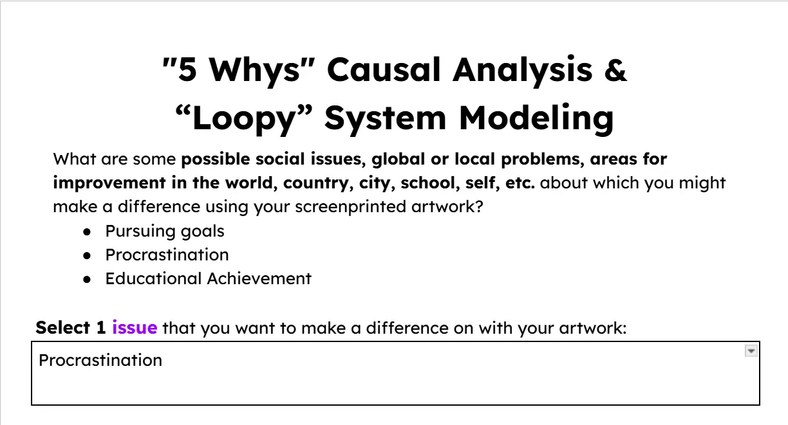
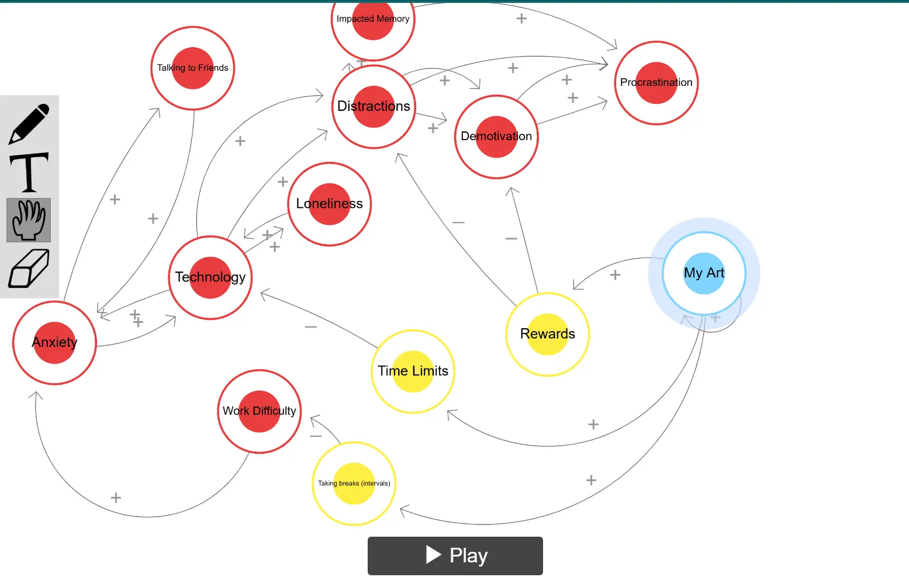

Now we've made it to the Social Change part of New Media and Tech. In Quarter 2 and 3 we were introduced to screenprinting, a hefty process that involves ink printing art to address a problem. Our teacher made a document for us to brainstorm problems to address. I thought of addressing procrasination, a very big problem in the school environment. Our teacher then introduced us to Loopy models, a fun way to use imagery to discuss how our art will make a change. I researched causes and the causes of those causes and placed them into a model. Then I placed my "art" and showed in our model how I expected my art to function.


Then I sketched out art I wanted to make. I sketched out a hand reaching out for gold, meant to represent reaching out for goals, since money is a goal for many. Then I made a draft storyboard for B Roll I will take of the past steps. I then made a full effort photoshop design of my artwork, which has specific filters like thresholds, levels, gradients, and tools like blurs and brushes to tune the artwork for screenprinting. Finally, for my midterm, I finished up my storyboard.
Our teacher provided wood, and I began marking wood for cutting. Why? Because we're making a frame for screenprinting. I placed the wood infront of a saw, adjusted it, clamped it, and cut the wood. After all 4 pieces are cut I glued and stapled the parts until a frame is formed. I grabbed mesh from the corner of the room and cut it to fit, although it had to be a little bigger than the frame for a step later. I stretched the mesh over the frame, stapled it onto the wood, and repeated over and over again on every side until the surface of the mesh inside the frame is smooth.
I took vinyl material, opened Sillhouette Studio, placed my art making sure not to forget mirroring it and set Sillhouette up for cutting. I placed the vinyl on a cutting machine, connected my desktop, and started the cutting process. After it was cut, I took a stencil and took out the cut parts until it's clear my art is cut out of the vinyl. There is a material in between, so I took that out to make the cuts a hole.
I ironed the vinyl onto the mesh placed before. It kind of works like glue. After that I prepared the frame for screenprinting by taping the edges. Finally, I placed the frame on a piece of paper, placed ink on the corner, and used a squeegee to spread it. I then started taking out the frame and praying.
Thankfully, the art looked perfect on the paper. With my newfound motivation I printed on more paper, a cardboard box, and most importantly a piece of fabric. We took every piece of fabric our class made and sewed it together to make Our Shared Canvas.
The 21st Century skill I showed the most strength in is Creativity and Innovation. Unlike approacing the problem in a standard way by by saying "Don't do/do something", I used the literary device of symbols, specifically through the gold, to address the problem. I also used the single word of "FOCUS" to express the entirety of the art's purpose. I directly went against the usual, and I think it benefited me. It forced a deeper level of thinking than most arts, which require more immersion.
Another paragraph
 Link to page/file on your site
Link to
external page on web (_blank opens in new tab)
Link to page/file on your site
Link to
external page on web (_blank opens in new tab)